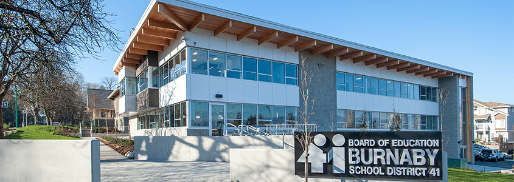

캐나다 내 보호자가 없어 현지 관리 체계가 필요한 학생에게 적합합니다. 같은 지역 관리형 대비 연간 1,600만~2,000만 원가량 저렴합니다.
PROGRAM SNAPSHOT
한눈에 보는 프로그램 개요
🎒
대상 학년
Grade 8~11
🗺
선택 가능 지역
버나비 · 랭리 · 코퀴틀람
🏡
숙소
홈스테이 (교육청 또는 에듀스마트)
💰
연간 비용
CA$38,250 ~ 44,500
LOCAL PHOTOS
광역밴쿠버 학교와 생활환경버나비·랭리·코퀴틀람 중 학생 조건에 맞는 지역을 비교합니다

버나비 교육청 지역 환경 · 에듀스마트 제공랭리 지역 생활 인프라 · 에듀스마트 제공
VIDEO
영상으로 먼저 확인하세요에듀스마트 공식 소개 영상
▲ 에듀스마트 공식 소개 영상
CHOOSE YOUR CITY
세 지역, 무엇이 다른가요?
비교 항목
랭리
버나비
코퀴틀람
밴쿠버까지
약 45분
스카이트레인 20분
차로 약 30분
홈스테이
교육청 배정
에듀스마트
에듀스마트 (아침 라이드 포함)
영어 몰입도
★★★
★★
★★
생활 편의성
★★
★★★
★★★
연간 비용
$38,250약 3,825만 원
$42,425약 4,243만 원
$44,500약 4,450만 원
💡 비용 차이의 이유 — 랭리가 가장 저렴한 것은 교육청 배정 홈스테이를 쓰기 때문이고, 코퀴틀람이 가장 비싼 것은 아침 등교 라이드가 포함되어 있기 때문입니다. 통학이 걱정되신다면 코퀴틀람의 $6,250 차액이 그만한 값을 합니다.
LANGLEY
랭리 — 조용한 주거 도시, 최고의 영어 몰입
랭리는 밴쿠버에서 약 45분 거리의 안전하고 여유로운 주거 중심 도시입니다. 주택가 위주의 환경과 낮은 소음, 쾌적한 생활 인프라로 학업에 집중하기 좋은 지역으로 알려져 있습니다. 대형 쇼핑몰·스포츠 시설·도서관 등 생활 편의시설은 갖춰져 있으면서, 한인 커뮤니티와 현지 문화가 균형 있게 형성되어 있습니다.
🏫 랭리 교육청
밴쿠버 광역권에서 안정적인 학군과 높은 학업 성취도로 평가받는 공립 교육청
국제학생을 위한 ESL(영어 지원) 프로그램을 체계적으로 운영
학생 개개인의 영어 실력과 학업 적응을 단계적으로 지원
조용하고 관리가 잘 된 학습 환경 — 학부모 만족도가 높은 교육청
BURNABY
버나비 — 도심 접근성과 교육 자원
버나비는 밴쿠버 도심과 인접한 중심 생활 도시로, 교통·교육·생활 인프라가 매우 우수합니다. 스카이트레인과 대중교통이 잘 연결되어 통학과 이동이 편리하며, 대형 쇼핑몰·도서관·공원 등 학생과 가족을 위한 시설이 풍부합니다. 다문화 환경 속에서 현지 학생들과 자연스럽게 교류할 수 있어, 영어 몰입도와 도시 생활의 편의성을 동시에 원하는 학생에게 적합합니다.
📘
AP · IB
불·중 이중언어 프로그램도 운영
💻
최신 학습환경
스마트보드·1:1 디바이스·STEM
🎓
SFU·BCIT 연계
조기 크레딧 기회 제공
🏀
스포츠·예술
다양한 교내 활동
🏡
승인 홈스테이
24시간 가디언 시스템
🩺
복지·상담
건강·안전 중심 맞춤 지원
COQUITLAM
코퀴틀람 — 자연과 인프라의 균형
코퀴틀람은 밴쿠버에서 차로 약 30분 거리의 쾌적하고 안전한 주거 중심 도시입니다. 자연과 도시 인프라가 조화를 이루고 있으며, 대중교통·쇼핑몰·도서관·커뮤니티 시설이 잘 갖춰져 있어 생활 만족도가 높습니다. 한인 커뮤니티가 안정적으로 형성되어 있으면서도 현지 학생들과 자연스럽게 어울릴 수 있는 환경입니다.
📍
지역
BC주 도시 · 총인구 약 126,500명 · 한국인 약 7,600명(전체의 약 6%)
🌤
환경
온화한 날씨와 인종 다양성 · 외국인에게 개방적 · 사계절 스포츠·레저
🎓
교육
높은 교육수준과 교육열 · 뛰어난 교육시설 · 세계 학생들의 높은 선호도
🏫 코퀴틀람 교육청 (SD43)
AP·IB 프로그램 및 초·중·고 연계 교육 과정
스마트보드·1:1 디바이스 기반 수업, STEM(코딩·로봇) 중심 혁신 학습 환경
스포츠·예술 활동이 활발하며 SFU·BCIT 연계 조기 진로 탐색 기회 제공
교육청 승인 홈스테이 및 24시간 가디언 시스템
SCHOOL SYSTEM
캐나다 교육 제도 기본기학년 배정과 입학 시기를 정하기 전에
학제
정규 교육은 G1~G12
만 4세 Pre-school, 만 5세 Kindergarten(학생비자 신청 가능), 만 6세부터 Elementary G1 시작 → G12(한국 고3)까지
학기
신학기 9월, 2학기 1~2월
지역(교육청)에 따라 3분류(K~G5 / G6~8 / G9~12) 또는 2분류(K~G7 / G8~12)로 운영
배정
Semester vs Linear
Linear(과목 1년간 진행)는 9월 입학이 유리, 한국에서 한 학년 마치고 1~2월 입학이면 Semester(학기별 신규 수강) 지구가 유리. Down Grade는 교육구에 따라 요청 가능하나 Secondary 과정에 한함
SERVICE SCOPE
가디언형 상세 서비스 4단계
1️⃣ 입국 전 서비스
가디언 위임 서류 발급 및 비자 신청용 서류 전달
온라인 사전 오리엔테이션
홈스테이 배정 및 안내
학생·보호자와 가디언 간 연락 체계 구축
2️⃣ 초기 정착 서비스 (입국 직후)
공항 픽업 및 홈스테이 체크인 동행
대중교통 이용법, 은행 계좌 개설, 생활 필수품 구매 지원
캐나다 생활 안내
3️⃣ 학교 등록 및 학업 관리
교육청 및 학교 등록 절차 동행
영어 레벨 테스트 안내 및 응시 지원
상담 교사와의 코스 선택 미팅 조율
성적표 및 주요 학사 정보 전달
학업 상담 및 진학 가이드
멘토링 추가 지원(별도 비용)
4️⃣ 생활 관리 서비스
홈스테이 생활 관리 및 가정과의 소통
응급 상황 시 병원 동행 및 보호자에게 공지
의료기관 안내 및 예약 지원
학생비자 연장 서비스(추가 비용 발생 가능)
COST
풀 가디언형 프로그램 비용 (10개월)2026-2027 기준
프로그램
포함 내용
비용
랭리 교육청가장 저렴 · 영어 몰입도 최고
공립 학비 + 공립 교육청 홈스테이 + 풀가디언
CA$38,250약 3,825만 원
버나비 교육청도심 접근성 · AP/IB
공립 학비 + 에듀스마트 홈스테이 + 풀가디언
CA$42,425약 4,243만 원
코퀴틀람 교육청아침 라이드 포함
공립 학비 + 에듀스마트 홈스테이(아침 라이드 포함) + 풀가디언
CA$44,500약 4,450만 원
●환율: 2026년 8월 기준 CAD/KRW 약 1,000원 적용, 환전 시점에 따라 변동 가능
●불포함: 의료비·약값·치과·안경 등 건강 관련 비용, 학생비자 연장 비용, 대학교 지원 컨설팅 비용
우선순위로 정하시면 됩니다. 영어 몰입이 최우선이면 랭리(가장 저렴하기도 합니다), 도심 접근성과 AP·IB 등 교육 자원이 중요하면 버나비, 통학 부담을 줄이고 싶으면 코퀴틀람(아침 라이드 포함)입니다. 세 곳 모두 공립 교육청이라 학교 수준 자체는 크게 차이 나지 않습니다.
Q2왜 랭리만 교육청 홈스테이인가요?
랭리 교육청이 자체 홈스테이 배정 시스템을 안정적으로 운영하고 있어 그대로 활용하는 구조입니다. 비용이 가장 저렴한 이유이기도 합니다. 반면 버나비·코퀴틀람은 에듀스마트가 직접 관리하는 홈스테이 풀을 사용해, 배정과 문제 발생 시 대응이 에듀스마트를 통해 이뤄집니다. 관리 주체가 다르다는 점을 이해하고 선택하세요.
Q3등하교는 실제로 어떻게 하나요?
코퀴틀람만 아침 등교 라이드가 포함되어 있고, 하교와 나머지 이동은 학생이 직접 합니다. 버나비·랭리는 아침 등교도 스쿨버스·대중교통·도보 또는 홈스테이 가정의 도움으로 해결합니다. 버나비는 대중교통이 촘촘해 부담이 적고, 랭리는 주택가 중심이라 홈스테이 위치에 따라 편차가 있습니다. 배정 후 실제 거리를 확인하시는 것이 좋습니다.
Q4영어 레벨 테스트는 어떻게 진행되나요?
입국 후 교육청에서 실시하며, 가디언이 안내와 응시를 지원합니다. 결과에 따라 ELL 레벨과 수강 과목이 정해지고, 상담 교사와의 코스 선택 미팅도 가디언이 조율합니다. 이 테스트가 첫 학기 시간표를 결정하므로 실질적으로 중요한 절차입니다. 시험 준비를 따로 할 필요는 없고, 현재 실력을 정확히 측정하는 것이 학생에게 유리합니다.
Q5성적이 떨어지면 누가 알려주나요?
가디언이 성적표와 주요 학사 정보를 전달합니다. 다만 이는 '전달'이지 '관리'가 아닙니다. 성적이 떨어졌을 때 원인을 분석하고 학습 계획을 다시 짜는 것은 멘토링 프로그램(별도 $4,500~5,500)의 영역입니다. 성적 관리까지 원하신다면 처음부터 멘토링을 함께 신청하거나 관리형을 검토하세요.
Q6Down Grade(학년 낮춰 입학)가 가능한가요?
가능하지만 조건이 있습니다. Secondary(고등 과정)에 한해서만 적용되며, 교육구에 따라 요청 가능 여부가 다릅니다. 영어가 많이 부족한 상태로 G10~11에 들어가면 졸업 요건인 80학점을 채우기 어려울 수 있어, 한 학년 낮춰 시작하는 것이 오히려 안전한 경우가 있습니다. 신청 시 상담을 통해 판단하시는 것이 좋습니다.
Q7홈스테이 가정과 문제가 생기면 어떻게 되나요?
가디언이 홈스테이 생활 관리와 가정과의 소통을 담당하므로 중재를 요청하시면 됩니다. 버나비·코퀴틀람은 에듀스마트 관리 홈스테이라 대응이 빠르고, 랭리는 교육청을 통해 처리됩니다. 적응 기간(보통 2~4주) 이후에도 문제가 지속되면 교체가 가능합니다. 아이가 참지 말고 바로 알리도록 미리 일러두세요.
Q8같은 지역 관리형과 비교하면 정확히 뭐가 빠지나요?
빠지는 것은 학원 수업(주 3~5회), 등하교 차량, 입시 컨설팅, 정기 학습 리포트입니다. 예를 들어 랭리 관리형($58,500)에는 LBUP 영어 프로그램과 월 1회 학업 상담이 들어 있지만, 랭리 가디언형($38,250)에는 없습니다. 표시 총액 차이는 $20,250이므로 필요한 과목만 별도로 보충할 수 있는 학생에게는 가디언형이 효율적일 수 있습니다.
Q9여름방학 비용은 포함되나요?
프로그램은 10개월(정규학기) 기준이므로 여름방학 7~8월은 포함되지 않습니다. 한국에 다녀오면 그 기간 비용은 발생하지 않지만 왕복 항공료가 들고, 현지에 남으면 두 달치 홈스테이비가 추가됩니다. 어느 쪽이든 연간 실제 지출은 표기 금액보다 커집니다.
Q10교육청 원서 지원비는 얼마나 드나요?
각 교육청 원서 지원비는 프로그램 비용에 포함되지 않는다고 명시되어 있습니다. BC주 공립 교육청의 국제학생 지원비는 통상 200~300캐나다달러 수준이며 대부분 환불되지 않습니다. 여러 교육청에 동시 지원하면 그만큼 중복 발생하니, 지역을 어느 정도 좁힌 뒤 지원하시는 것이 좋습니다.